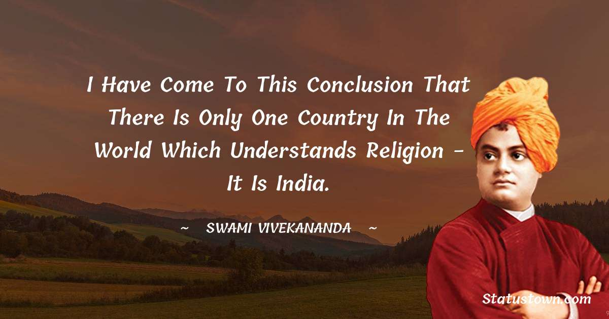
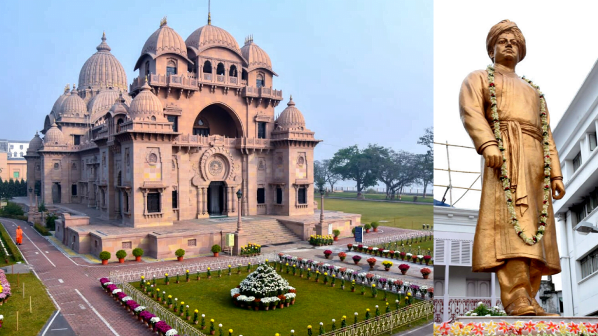
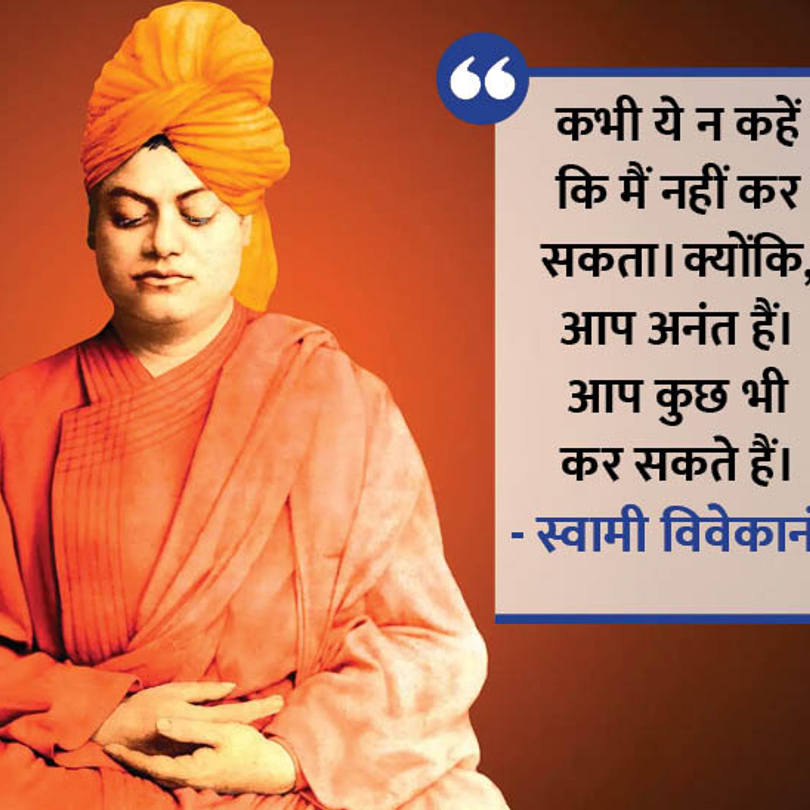
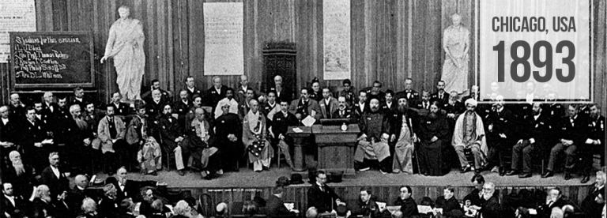
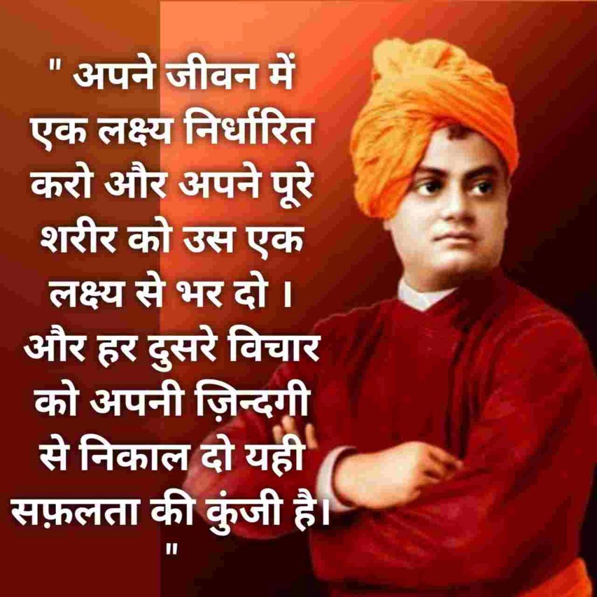

About Swami Vivekananda
Vivekananda, original name Narendranath Datta, Datta also spelled Dutt, (born January 12, 1863, Calcutta [now
Kolkata]—died July 4, 1902, near Calcutta), was a renowned Indian Hindu monk and philosopher who gained worldwide
recognition for his impactful speech at the 1893 Parliament of the World's Religions in Chicago. He stressed the
unity of religions and the importance of self-realization through service to humanity. Founding the Ramakrishna
Math and Mission, he left a lasting legacy, inspiring millions with his teachings on spirituality, philosophy, and
social service.
Achievements and Struggles

- Parliament of the World's Religions: One of Swami Vivekananda's most significant achievements was
his participation in the Parliament of the World's Religions held in Chicago in 1893. His speech, starting with
the famous words "Sisters and Brothers of America," garnered international acclaim and introduced Hinduism and
Indian spirituality to the Western world.
- Propagation of Vedanta and Yoga: Swami Vivekananda played a pivotal role in popularizing Vedanta
and Yoga philosophy both in India and abroad. His teachings emphasized the universality of religions and the
importance of direct experience of the Divine.

- Establishment of Belur Math: Swami Vivekananda set up the Belur Math on the banks of the Ganges
in West Bengal, which serves as the headquarters of the Ramakrishna Math and Mission, a hub of spiritual and
humanitarian activities.
- Early Life Struggles: Before meeting his spiritual guru, Sri Ramakrishna, Vivekananda faced
various struggles in his life. He encountered financial difficulties and was troubled by existential questions,
seeking deeper meaning and purpose.

- Guru's Passing: Swami Vivekananda had a close bond with Sri Ramakrishna, who was his
spiritual mentor and guide. The passing of Sri Ramakrishna was a significant emotional struggle for Vivekananda.
- Challenges in the West: While in the West, Swami Vivekananda faced cultural and language
barriers. He also encountered skepticism and criticism but overcame these challenges with his intellect,
charisma, and unwavering dedication to his mission.
- Resurrecting Hinduism: In India, Vivekananda encountered various social and religious challenges,
including caste-based discrimination and colonial oppression. He worked tirelessly to revive the essence of
Hinduism, promote social reforms, and instill pride in Indian cultural heritage.
Records

- First Hindu Monk to Address the Parliament of the World's Religions: In 1893, Swami Vivekananda
became the first Hindu monk to address the Parliament of the World's Religions held in Chicago. His speech
received a standing ovation and introduced Hinduism and Indian spirituality to the Western world.He is primarily
remembered for his speech at the World Parliament of Religions in Chicago in 1893, which began with - “My
brothers and sisters of America.”
- Inspirational Leader and Philosopher: Swami Vivekananda is considered one of India's most
influential spiritual leaders and philosophers, whose teachings continue to inspire millions worldwide.
- Legacy in Education: Swami Vivekananda's emphasis on education as a means of empowerment has led
to the establishment of numerous educational institutions and schools that carry his teachings forward.

- Nationalism and Spirituality: Vivekananda believed that the spiritual strength of India lay in
its ancient wisdom and heritage. He saw a connection between India's spiritual essence and its potential to rise
as a strong nation. His teachings inspired a sense of pride and nationalism among Indians.
- Spiritual Leader of Ramakrishna Math and Mission: He became a revered spiritual leader of the
Ramakrishna Math and Mission, an order that continues to propagate his teachings and ideals worldwide.